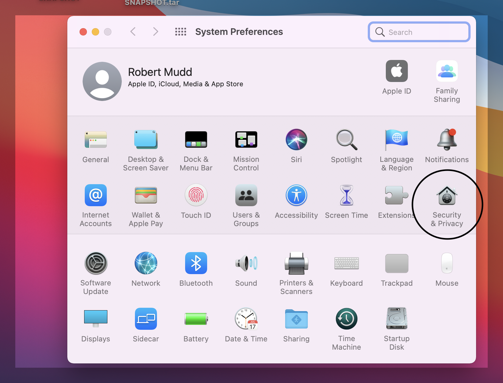
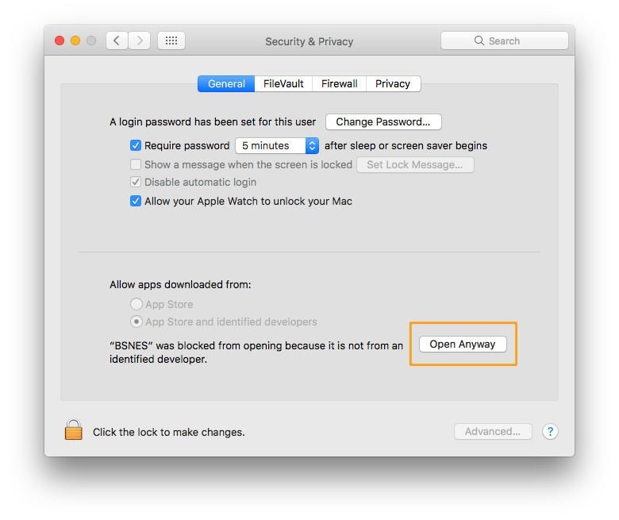

1. First, update your Java Runtime Environment.
2. Then, download the game to a destination of your choosing. It is a TAR file (similar to a zip file).
3. Double-Click the file...it will extract the file into a folder with the same name.
4. You can now delete the TAR file-- all the game files you need are in the folder.
5. Inside the folder is a folder named "bin"; go there. Inside the bin folder there is
an executable file. Double-click to launch the game.
If you're on a Mac, you will probably get a warning that they don't recognize the developer. To resolve this, do the following:
1. Click on the apple icon in the upper left corner of the screen and select System Preferences.
2. Double-click on the Security & Privacy icon.
3. Under the General tab there is a section called "Allow Apps Downloaded From...". If your computer's security settings prevented you from opening the file, there will be a button that says the file had been blocked. Click open anyways.
4. You will be warned and asked to enter your password, and may be asked multiple times.
Double-click the executable to start the game (you can also create a shortcut/alias to make this more accessible).
1. Ask Rob or Becky for the IP address to connect to. You can not play the game unless the server is running.
2. Select the appropriate number of players for the game.
3. The port number should not change.
4. Once Rob or Becky confirm the server is up, click Start Game!